일반기계기사 (2015-05-31 기출문제)
1과목: 재료역학
1. 단면이 가로 100mm, 세로 150mm인 사각 단면보가 그림과 같이 하중(P)을 받고 있다. 전단응력에 의한 설계에서 P는 각각 100kN 씩 작용할 때 안전계수를 2로 설계하였다고 하면, 이 재료의 허용전단응력은 약 몇 MPa인가?
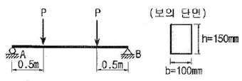
- 10
- 15
- 18
- 20
(정답률: 45%)

2. 그림과 같은 직사각형 단면의 단순보 AB에 하중이 작용할 때, A단에서 20cm 떨어진 곳의 굽힘 응력은 몇 MPa인가? (단, 보의 폭은 6cm 이고, 높이는 12cm 이다.)
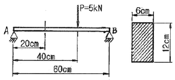
- 2.3
- 1.9
- 3.7
- 2.9
(정답률: 53%)
3. 길이가 2m인 환봉에 인장하중을 가하여 변화된 길이가 0.14cm일 때 변형률은?
- 70×10-6
- 700×10-6
- 70×10-3
- 700×10-3
(정답률: 56%)
4. 그림과 같이 단순보의 지점 B에 M0의 모멘트가 작용할 때 최대 굽힘 모멘트가 발생되는 A단에서부터 거리 x 는?
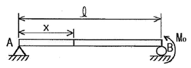
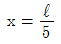
- x=ℓ
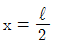
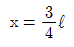
(정답률: 50%)
5. 지름 3mm의 철사로 평균지름 75mm의 압축코일 스프링을 만들고 하중 10N에 대하여 3cm의 처짐량을 생기게 하려면 감은 회수(n)는 대략 얼마로 해야 하는가? (단, 전단 탄성계수 G = 88GPa 이다.)
- n = 8.9
- n = 8.5
- n = 5.2
- n = 6.3
(정답률: 51%)
6. 그림과 같은 계단 단면의 중실 원형축의 양단을 고정하고 계단 단면부에 비틀림 모멘트 T가 작용할 경우 지름 D1과 D2의 축에 작용하는 비틀림 모멘트의 비 T1/T2 은? (단, D1 = 8cm, D2 = 4cm, ℓ1 = 40cm, ℓ2 = 10cm 이다.)
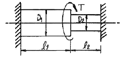
- 2
- 4
- 8
- 16
(정답률: 48%)
7. 그림과 같은 단면에서 가로방향 중립축에 대한 단면 2차 모멘트는?
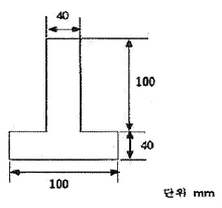
- 10.67 x 106 mm4
- 13.67 x 106 mm4
- 20.67 x 106 mm4
- 23.67 x 106 mm4
(정답률: 46%)
8. 두께 8mm의 강판으로 만든 안지름 40cm의 얇은 원통에 1MPa의 내압이 작용할 때 강판에 발생하는 후프 응력(원주 응력)은 몇 MPa인가?
- 25
- 37.5
- 12.5
- 50
(정답률: 57%)
9. 무게가 각각 300N, 100N 인 물체 A , B 가 경사면 위에 놓여있다. 물체 B 와 경사면과는 마찰이 없다고 할 때 미끄러지지 않을 물체 A와 경사면과의 최소 마찰 계수는 얼마인가?
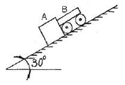
- 0.19
- 0.58
- 0.77
- 0.94
(정답률: 40%)
10. σx = 400MPa, σy = 300MPa, τxy = 200MPa가 작용하는 재료 내에 발생하는 최대 주응력의 크기는?
- 206MPa
- 556MPa
- 350MPa
- 753MPa
(정답률: 59%)
11. 그림과 같은 트러스가 점 B에서 그림과 같은 방향으로 5kN의 힘을 받을 때 트러스에 저장되는 탄성에너지는 몇 kJ 인가? (단, 트러스의 단면적은 1.2cm2, 탄성계수는 106Pa 이다.)
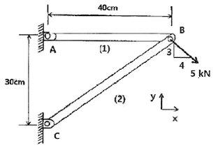
- 52.1
- 106.7
- 159.0
- 267.7
(정답률: 43%)
12. 바깥지름 50cm, 안지름 40cm의 중공원통에 500kN의 압축하중이 작용했을 때 발생하는 압축응력은 약 몇 MPa인가?
- 5.6
- 7.1
- 8.4
- 10.8
(정답률: 64%)
13. 양단이 힌지인 기둥의 길이가 2m이고, 단면이 직사각형(30㎜ x 20㎜)인 압축 부재의 좌굴하중을 오일러 공식으로 구하면 몇 kN인가? (단, 부재의 탄성 계수는 200GPa 이다.)
- 9.9kN
- 11.1kN
- 19.7kN
- 22.2kN
(정답률: 54%)
14. 그림과 같은 외팔보가 집중 하중 P를 받고 있을 때, 자유단에서의 처짐 δA는? (단, 보의 굽힘 강성 EI는 일정하고, 자중은 무시한다.)
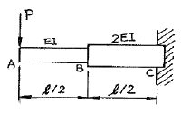
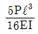
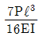
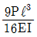
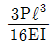
(정답률: 21%)
15. 그림과 같은 가는 곡선보가 1/4 원 형태로 있다. 이 보의 B 단에 Mo의 모멘트를 받을 때, 자유단의 기울기는? (단, 보의 굽힘 강성 EI는 일정하고, 자중은 무시한다.)
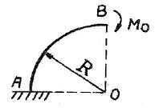
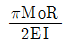
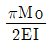
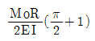
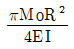
(정답률: 28%)
16. 왼쪽이 고정단인 길이 ℓ의 외팔보가 ω의 균일분포하중을 받을 때, 굽힘모멘트 선도(BMD)의 모양은?
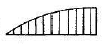
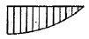
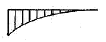
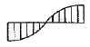
(정답률: 55%)
17. 길이가 L(m)이고, 일단 고정에 타단 지지인 그림과 같은 보에 자중에 의한 분포하중 w(N/m)가 보의 전체에 가해질 때 점 B에서의 반력의 크기는?
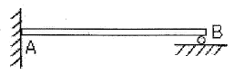
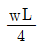
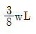
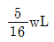
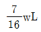
(정답률: 56%)
18. 강체로 된 봉 CD가 그림과 같이 같은 단면적과 재료가 같은 케이블 ①, ②와 C점에서 힌지로 지지되어 있다. 힘 P 에 의해 케이블 ①에 발생하는 응력(σ)은 어떻게 표현되는가? (단, A는 케이블의 단면적이며 자중은 무시하고, a는 각 지점간의 거리이고 케이블 ①, ②의 길이 ℓ은 같다.)
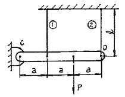
- 2P/3A
- P/3A
- 4P/5A
- P/5A
(정답률: 16%)
19. 원형막대의 비틀림을 이용한 토션바(torsion bar) 스프링에서 길이와 지름을 모두 10%씩 증가시킨다면 토션바의 비틀림 스프링상수 (비틀림 토크/비틀림 각도)는 몇 배로 되겠는가?
- 1.1-2배
- 1.12배
- 1.13배
- 1.14배
(정답률: 47%)
20. 재료가 전단 변형을 일으켰을 때, 이 재료의 단위 체적당 저장된 탄성에너지는? (단, τ는 전단응력, G는 전단 탄성계수이다.)
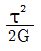
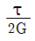
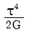
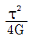
(정답률: 56%)
2과목: 기계열역학
21. 상태와 상태량과의 관계에 대한 설명 중 틀린 것은?
- 순수물질 단순 압축성 시스템의 상태는 2개의 독립적 강도성 상태량에 의해 완전하게 결정된다.
- 상변화를 포함하는 물과 수증기의 상태는 압력과 온도에 의해 완전하게 결정된다.
- 상변화를 포함하는 물과 수증기의 상태는 온도와 비체적에 의해 완전하게 결정된다.
- 상변화를 포함하는 물과 수증기의 상태는 압력과 비체적에 의해 완전하게 결정된다.
(정답률: 33%)
22. 기본 Rankine 사이클의 터빈 출구 엔탈피 htc= 1200 kJ/kg, 응축기 방열량 qL = 1000kJ/kg, 펌프 출구 엔탈피 hpe = 210 kJ/kg, 보일러 가열량 qH = 1210 kJ/kg이다. 이 사이클의 출력일은?
- 210kJ/kg
- 220kJ/kg
- 230kJ/kg
- 420kJ/kg
(정답률: 50%)
23. 분자량이 30인 C2H6(에탄)의 기체상수는 몇 kJ/kg • K 인가?
- 0.277
- 2.013
- 19.33
- 265.43
(정답률: 58%)
24. 펌프를 사용하여 150 kPa, 26℃의 물을 가역 단열과정으로 650 kPa로 올리려고 한다. 26℃의 포화액의 비체적이 0.001 m3/kg이면 펌프일은?
- 0.4kJ/kg
- 0.5kJ/kg
- 0.6kJ/kg
- 0.7kJ/kg
(정답률: 57%)
25. 클라우지우스(Clausius) 부등식을 표현한 것으로 옳은 것은? (단, T는 절대 온도, Q는 열량을 표시한다.)
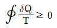
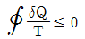
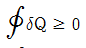
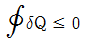
(정답률: 61%)
26. 공기 2 kg이 300 K, 600kPa 상태에서 500 K, 400kPa 상태로 가열된다. 이 과정 동안의 엔트로피 변화량은 약 얼마인가? (단, 공기의 정적비열과 정압비열은 각각 0.717kJ/kg∙K과 1.004 kJ/kg∙K로 일정하다.)
- 0.73 kJ/K
- 1.83 kJ/K
- 1.02 kJ/K
- 1.26 kJ/K
(정답률: 36%)
27. 역 카르노사이클로 작동하는 증기압축 냉동 사이클에서 고열원의 절대온도를 TH, 저열원의 절대온도를 TL 이라 할 때, TH/TL=1.6 이다. 이 냉동사이클이 저열원으로부터 2.0kW의 열을 흡수한다면 소요 동력은?
- 0.7 kW
- 1.2 kW
- 2.3 kW
- 3.9 kW
(정답률: 53%)
28. 용기에 부착된 압력계에 읽힌 계기압력이 150 kPa이고 국소대기압이 100 kPa일 때 용기 안의 절대압력은?
- 250 kPa
- 150 kPa
- 100 kPa
- 50 kPa
(정답률: 59%)
29. 자연계의 비가역 변화와 관련 있는 법칙은?
- 제 0법칙
- 제 1법칙
- 제 2법칙
- 제 3법칙
(정답률: 56%)
30. 이상기체의 등온과정에 관한 설명 중 옳은 것은?
- 엔트로피 변화가 없다.
- 엔탈피 변화가 없다.
- 열 이동이 없다.
- 일이 없다.
(정답률: 46%)
31. 오토사이클(Otto cycle)의 압축비 ɛ= 8 이라고 하면 이론 열효율은 약 몇 %인가? (단, k = 1.4 이다.)
- 36.8 %
- 46.7 %
- 56.5 %
- 66.6 %
(정답률: 59%)
32. 두께 1cm, 면적 0.5m2의 석고판의 뒤에 가열판이 부착되어 1000W의 열을 전달한다. 가열판의 뒤는 완전히 단열되어 열은 앞면으로만 전달된다. 석고판 앞면의 온도는 100℃이다. 석고의 열전도율이 k = 0.79 W/m • K일 때 가열 판에 접하는 석고 면의 온도는 약 몇 ℃인가?
- 110
- 125
- 150
- 212
(정답률: 50%)
33. 어떤 냉장고에서 엔탈피 17kJ/kg의 냉매가 질량 유량 80 kg/hr로 증발기에 들어가 엔탈피 36kJ/kg가 되어 나온다. 이 냉장고의 냉동능력은?
- 1200 kJ/hr
- 1800 kJ/hr
- 1520 kJ/hr
- 2000 kJ/hr
(정답률: 57%)
34. 출력이 50kW인 동력 기관이 한 시간에 13kg의 연료를 소모한다. 연료의 발열량이 45000 kJ/kg이라면, 이 기관의 열효율은 약 얼마인가?
- 25%
- 28%
- 31%
- 36%
(정답률: 56%)
35. 해수면 아래 20m에 있는 수중다이버에게 작용하는 절대압력은 약 얼마인가? (단, 대기압은 101 kPa 이고, 해수의 비중은 1.03이다.)
- 101 kPa
- 202 kPa
- 303 kPa
- 504 kPa
(정답률: 54%)
36. 실린더에 밀폐된 8 kg의 공기가 그림과 같이 P1=800 kPa, 체적 V1=0.27 m3에서 P2=350 kPa, 체적 V2=0.80 m3으로 직선 변화하였다. 이 과정에서 공기가 한 일은 약 몇 kJ 인가?
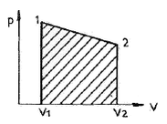
- 254
- 3⑤
- 382
- 390
(정답률: 61%)
37. 대기압 하에서 물을 20℃에서 90℃로 가열하는 동안의 엔트로피 변화량은 약 얼마인가? (단, 물의 비열은 4.184 kJ/kg • K 로 일정하다.)
- 0.8 kJ/kg • K
- 0.9 kJ/kg • K
- 1.0 kJ/kg • K
- 1.2 kJ/kg • K
(정답률: 52%)
38. 절대온도가 0 에 접근할수록 순수 물질의 엔트로피는 0에 접근한다는 절대 엔트로피 값의 기준을 규정한 법칙은?
- 열역학 제 0법칙 이다.
- 열역학 제 1법칙 이다.
- 열역학 제 2법칙 이다.
- 열역학 제 3법칙 이다.
(정답률: 45%)
39. 압축기 입구 온도가 -10℃, 압축기 출구 온도가 100℃, 팽창기 입구 온도가 5℃, 팽창이 출구온도가 -75℃로 작동되는 공기 냉동기의 성능계수는? (단, 공기의 Cp는 1.0035 kJ/kg •℃로서 일정하다.)
- 0.56
- 2.17
- 2.34
- 3.17
(정답률: 27%)
40. 배기체적이 1200cc, 간극체적이 200cc의 가솔린 기관의 압축비는 얼마인가?
- 5
- 6
- 7
- 8
(정답률: 41%)
3과목: 기계유체역학
41. 길이 20m의 매끈한 원관에 비중 0.8의 유체가 평균속도 0.3m/s로 흐를 때, 압력손실은 약 얼마인가? (단, 원관의 안지름은 50mm, 점성계수는 8x10-3 Pa • s 이다.)
- 613Pa
- 734Pa
- 1235Pa
- 1440Pa
(정답률: 51%)
42. 속도 15m/s로 항해하는 길이 80m의 화물선의 조파 저항에 관한 성능을 조사하기 위하여 수조에서 길이 3.2m인 모형 배로 실험을 할 때 필요한 모형 배의 속도는 몇 m/s인가?
- 9.0
- 3.0
- 0.33
- 0.11
(정답률: 58%)
43. 한 변이 1m인 정육면체 나무토막의 아랫면에 1080N의 납을 매달아 물속에 넣었을 때, 물위로 떠오르는 나무토막의 높이는 몇 cm인가? (단, 나무토막의 비중은 0.45, 납의 비중은 11이고, 나무토막의 밑면은 수평을 유지한다.)
- 55
- 48
- 45
- 42
(정답률: 26%)
44. 공기가 기압 200kPa일 때, 20℃에서의 공기의 밀도는 약 몇 kg/m3인가? (단, 이상기체이며, 공기의 기체상수 R = 287J/kg • K 이다.)
- 1.2
- 2.38
- 1.0
- 999
(정답률: 61%)
45. 정상, 균일유동장 속에 유동 방향과 평행하게 놓여진 평판 위에 발생하는 층류 경계층의 두께 δ는 x를 평판 선단으로부터의 거리라 할 때, 비례값은?
- x1
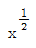
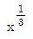
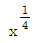
(정답률: 55%)
46. 원관에서 난류로 흐르는 어떤 유체의 속도가 2배가 되었을 때, 마찰계수가 1/√2배로 줄었다. 이때 압력손실은 몇 배인가?
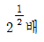
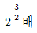
- 2배
- 4배
(정답률: 49%)
47. 비점상, 비압축성 유체가 그림과 같이 작은 구멍을 향해 쐐기모양의 벽면 사이를 흐른다. 이 유동을 근사적으로 표현하는 무차원 속도 포텐셜이 ø = -2Inr 로 주어질 때, r=1 인 지점에서의 유속 V는 몇 m/s인가? (단,
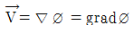
로 정의한다.)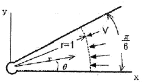
- 0
- 1
- 2
- π
(정답률: 48%)
48. 그림과 같은 노즐을 통하여 유량 Q만큼의 유체가 대기로 분출될 때, 노즐에 미치는 유체의 힘 F는? (단, A1, A2는 노즐의 단면 1,2에서의 단면적이고 ρ는 유체의 밀도이다.)
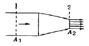
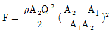
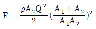
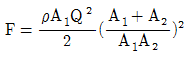
(정답률: 32%)
49. 중력과 관성력의 비로 정의되는 무차원수는? (단, p:밀도, V:속도, ℓ:특성 길이, μ:점성계수, P:압력, g:중력가속도, c:소리의 속도)
(정답률: 53%)
50. 아래 그림과 같이 직경이 2m, 길이가 1m인 관에 비중량 9800N/m3인 물이 반 차있다. 이관의 아래쪽 사분면 AB 부분에 작용하는 정수력의 크기는?
- 4900N
- 7700N
- 9120N
- 12600N
(정답률: 22%)
51. 그림과 같이 경사관 마노미터의 직경 D=10d이고 경사관은 수평면에 대해 θ만큼 기울여져 있으며 대기 중에 노출되어 있다. 대기압보다 △p의 큰 압력이 작용할 때, L과 △p와 관계로 옳은 것은? (단, 점선은 압력이 가해지기 전 액체의 높이이고, 액체의 밀도는 p, θ=30°이다.)
(정답률: 28%)
52. 유선(streamline)에 관한 설명으로 틀린 것은?
- 유선으로 만들어지는 관을 유관(streamtube)이라 부르며, 두께가 없는 관벽을 형성한다.
- 유선 위에 있는 유체의 속도 백터는 유선의 접선방향이다.
- 비정상 유동에서 속도는 유선에 따라 시간적으로 변화 할 수 있으나, 유선 자체는 움직일 수 없다.
- 정상유동일 때 유선은 유체의 입자가 움직이는 궤적이다.
(정답률: 46%)
53. 다음 중 체적 탄성 계수와 차원이 같은 것은?
- 힘
- 체적
- 속도
- 전단응력
(정답률: 55%)
54. 다음 중 유체에 대한 일반적인 설명으로 틀린 것은?
- 점성은 유체의 운동을 방해하는 저항의 척도로서 유속에 비례한다.
- 비점성유체 내에서는 전단응력이 작용하지 않는다.
- 정지유체 내에서는 전단응력이 작용하지 않는다.
- 점성이 클수록 전단응력이 크다.
(정답률: 39%)
55. 관로내 물(밀도 1000kg/m3)이 30m/s로 흐르고 있으며 그 지점의 정압이 100kPa일 때, 정체압은 몇 kPa인가?
- 0.45
- 100
- 450
- 550
(정답률: 40%)
56. 유속 3m/s로 흐르는 물속에 흐름방향의 직각으로 피토관을 세웠을 때, 유속에 의해 올라가는 수주의 높이는 약 몇 m 인가?
- 0.46
- 0.92
- 4.6
- 9.2
(정답률: 59%)
57. 다음 중 질량 보존을 표현한 것으로 가장 거리가 먼 것은? (단, ρ는 유체의 밀도, A는 관의 단면적, V는 유체의 속도이다.)
(정답률: 46%)
58. 안지름 0.1m인 파이프 내를 평균 유속 5m/s로 어떤 액체가 흐르고 있다. 길이 100m 사이의 손실수두는 약 몇 m인가? (단, 관내의 흐름으로 레이놀즈수는 1000 이다.)
- 81.6
- 50
- 40
- 16.32
(정답률: 56%)
59. 항력에 관한 일반적인 설명 중 틀린 것은?
- 난류는 항상 항력을 증가시킨다.
- 거친 표면은 항력을 감소시킬 수 있다.
- 항력은 압력과 마찰력에 의해서 발생한다.
- 레이놀즈수가 아주 작은 유동에서 구의 항력은 유체의 점성계수에 비례한다.
(정답률: 35%)
60. 압력구배가 영인 평판위의 경계층 유동과 관련된 설명 중 틀린 것은?
- 표면조도가 천이에 영향을 미친다.
- 경계층 외부유동에서의 교란정도가 천이에 영향을 미친다.
- 층류에서 난류로의 천이는 거리를 기준으로 하는 Reynolds수의 영향을 받는다.
- 난류의 속도 분포는 층류보다 덜 평평하고 층류경계층보다 다소 얇은 경계층을 형성한다.
(정답률: 45%)
4과목: 기계재료 및 유압기기
61. 탄소강에 함유되어 있는 원소 중 많이 함유되면 적열 취성의 원인이 되는 것은?
- 인
- 규소
- 구리
- 황
(정답률: 69%)
62. 충격에는 약하나 압축강도는 크므로 공작기계의 베드, 프레임, 기계 구조물의 몸체등에 가장 적합한 재질은?
- 합금공구강
- 탄소강
- 고속도강
- 주철
(정답률: 58%)
63. 철강재료의 열처리에서 많이 이용되는 S곡선이란 어떤 것을 의미하는가?
- T.T.L 곡선
- S.C.C 곡선
- T.T.T 곡선
- S.T.S 곡선
(정답률: 67%)
64. 백주철을 열처리로에서 가열한 후 탈탄시켜, 인성을 증가시킨 주철은?
- 가단주철
- 회주철
- 보통주철
- 구상흑연주철
(정답률: 58%)
65. 특수강인 Elinvar의 성질은 어느 것인가?
- 열팽창계수가 크다.
- 온도에 따른 탄성률의 변화가 적다.
- 소결합금이다.
- 전기전도도가 아주 좋다.
(정답률: 56%)
66. 탄소강을 경화 열처리 할 때 균열을 일으키지 않게 하는 가장 안전한 방법은?
- Ms점까지는 급냉하고 Ms, Mf사이는 서냉한다.
- Mf점 이하까지 급냉한 후 저온도로 뜨임한다.
- Ms점까지 서냉하여 내외부가 동일온도가 된 후 급냉한다.
- Ms, Mf 사이의 온도까지 서냉한 후 급냉한다.
(정답률: 51%)
67. 배빗메탈 이라고도 하는 베어링용 합금인 화이트 메탈의 주요성분으로 옳은 것은?
- Pb-W-Sn
- Fe-Sn-Cu
- Sn-Sb-Cu
- Zn-Sn-Cr
(정답률: 62%)
68. 고속도강의 특징을 설명한 것 중 틀린 것은?
- 열처리에 의하여 경화하는 성질이 있다.
- 내마모성이 크다.
- 마텐자이트(martensite)가 안정되어, 600℃까지는 고속으로 절삭이 가능하다.
- 고Mn강, 칠드주철, 경질유리 등의 절삭에 적합하다.
(정답률: 39%)
69. 오일리스 베어링과 관계가 없는 것은?
- 구리와 납의 합금이다.
- 기름보급이 곤란한 곳에 적당하다.
- 너무 큰 하중이나 고속회전부에는 부적당하다.
- 구리, 주석, 흑연의 분말을 혼합 성형한 것이다.
(정답률: 47%)
70. 쾌삭강(Free cutting steel)에 절삭속도를 크게 하기 위하여 첨가하는 주된 원소는?
- Ni
- Mn
- W
- S
(정답률: 42%)
71. 그림과 같은 압력제어 밸브의 기호가 의미하는 것은?
- 정압 밸브
- 2-way 감압 밸브
- 릴리프 밸브
- 3-way 감압 밸브
(정답률: 71%)
72. 유압기기와 관련된 유체의 동역학에 관한 설명으로 옳은 것은?
- 유체의 속도는 단면적이 큰 곳에서는 빠르다.
- 유속이 작고 가는 관을 통과할 때 난류가 발생한다.
- 유속이 크고 굵은 관을 통과할 때 층류가 발생한다.
- 점성이 없는 비압축성의 액체가 수평관을 흐를 때, 압력수두와 위치수두 및 속도수두의 합은 일정하다.
(정답률: 71%)
73. 유압펌프에 있어서 체적효율이 90%이고 기계효율이 80%일 때 유압펌프의 전효율은?
- 23.7%
- 72%
- 88.8%
- 90%
(정답률: 69%)
74. 그림과 같은 유압 잭에서 지름이 D2=2D1일 때 누르는 힘 F1과 F2의 관계를 나타낸 식으로 옳은 것은?
- F2=F1
- F2=2F1
- F2=4F1
- F2=8F1
(정답률: 71%)
75. 다음 중 작동유의 방청제로서 가장 적당한 것은?
- 실리콘유
- 이온화합물
- 에나멜화합물
- 유기산 에스테르
(정답률: 57%)
76. 펌프의 무부하 운전에 대한 장점이 아닌 것은?
- 작업시간 단축
- 구동동력 경감
- 유압유의 열화 방지
- 고장방지 및 펌프의 수명 연장
(정답률: 58%)
77. 그림과 같은 회로도는 크기가 같은 실린더로 동조하는 회로이다. 이 동조회로의 명칭으로 가장 적합한 것은?
- 래크와 피니언을 사용한 동조회로
- 2개의 유압모터를 사용한 동조회로
- 2개의 릴리프 밸브를 사용한 동조회로
- 2개의 유량제어 밸브를 사용한 동조회로
(정답률: 61%)
78. 램이 수직으로 설치된 유압 프레스에서 램의 자중에 의한 하강을 막기 위해 배압을 주고자 설치하는 밸브로 적절한 것은?
- 로터리 베인 밸브
- 파일럿 체크 밸브
- 블리드 오프 밸브
- 카운터 밸런스 밸브
(정답률: 69%)
79. 유압 배관 중 석유계 작동유에 대하여 산화작용을 조장하는 촉매역할을 하기 때문에 내부에 카드뮴 또는 니켈을 도금하여 사용하여야 하는 것은?
- 동관
- PPC관
- 액셀관
- 고무관
(정답률: 62%)
80. 베인모터의 장점에 관한 설명으로 옳지 않은 것은?
- 베어링 하중이 작다.
- 정 • 역회전이 가능하다.
- 토크 변동이 비교적 작다.
- 기동시나 저속 운전시 효율이 높다.
(정답률: 59%)
5과목: 기계제작법 및 기계동력학
81. 고상용접(Solid-State Welding)형식이 아닌 것은?
- 롤 용접
- 고온압점
- 압출용접
- 전자빔 용접
(정답률: 55%)
82. 주조에서 열점(hot spot)의 정의로 옳은 것은?
- 유로의 확대부
- 응고가 가장 더딘 부분
- 유로 단면적이 가장 좁은 부분
- 주조시 가장 고온이 되는 부분
(정답률: 47%)
83. 조립형 프레임이 주조 프레임과 비교할 때 장점이 아닌 것은?
- 무게가 1/4정도 감소된다.
- 프레임의 수리가 비교적 용이하다.
- 기계가공이나 설계 후 오차 수정이 용이하다.
- 프레임이 복잡하거나 무게가 비교적 큰 경우에 적합하다.
(정답률: 47%)
84. 판재의 두께 6mm, 원통의 바깥지름 500mm인 원통의 마름질한 판뜨기의 길이[mm]는 약 얼마인가?
- 1532
- 1542
- 1552
- 1562
(정답률: 33%)
85. 측정기의 구조상에서 일어나는 오차로서 눈금 또는 피치의 불균일이나 마찰, 측정압 등의 변화 등에 의해 발생하는 오차는?
- 개인 오차
- 기기 오차
- 우연 오차
- 불합리 오차
(정답률: 68%)
86. 슈퍼 피니싱에 관한 내용으로 틀린 것은?
- 숫돌 길이는 일감 길이와 같은 것을 일반적으로 사용한다.
- 숫돌의 폭은 일감의 지름과 같은 정도의 것이 일반적으로 쓰인다.
- 원통의 외면, 내면, 평면을 다듬을 수 있으므로 많은 기계 부품의 정밀 다듬질에 응용된다.
- 접촉면적이 넓으므로 연삭작업에서 나타난 이송선, 숫돌이 떨림으로 나타난 자리는 완전히 없앨 수 없다.
(정답률: 38%)
87. 단조를 위한 재료의 가열법 중 틀린 것은?
- 너무 과열되지 않게 한다.
- 될수록 급격히 가열하여야 한다.
- 너무 장시간 가열하지 않도록 한다.
- 재료의 내외부를 균일하게 가열한다.
(정답률: 68%)
88. 밀링작업에서 분할대를 사용하여 원주를 씩 등분하는 방법으로 옳은 것은?
- 18구멍짜리에서 15구멍씩 돌린다.
- 15구멍짜리에서 18구멍씩 돌린다.
- 36구멍짜리에서 15구멍씩 돌린다.
- 36구멍짜리에서 18구멍씩 돌린다.
(정답률: 45%)
89. 방전가공에서 가장 기본적인 회로는?
- RC 회로
- 고전압법 회로
- 트랜지스터 회로
- 임펄스 발전기회로
(정답률: 58%)
90. 금속표면에 크롬을 고온에서 확산 침투시키는 것을 크로마이징(cromizing)이라 한다. 이는 주로 어떤 성질을 향상시키기 위함인가?
- 인성
- 내식성
- 전연성
- 내충격성
(정답률: 62%)
91. 1 자유도 진동계에서 다음 수식 중 옳은 것은?
- ω=2πf
- T=ωf
(정답률: 51%)
92. 직선운동을 하고 있는 한 질점의 위치가 s = 2t3 - 24t + 6 으로 주어졌다. 이 때 t = 0 의 초기상태로부터 126m/s의 속도가 될 때까지의 걸린 시간은 얼마인가? (단, s는 임의의 고정으로부터의 거리이고 단위는 m이며, 시간의 단위는 초(sec)이다.)
- 2초
- 4초
- 5초
- 6초
(정답률: 51%)
93. 진자형 충격시험장치에 외부 작용력 P 가 작용할 때, 물체의 회전축에 있는 베어링에 반작용력이 작용하지 않기 위한 점 A는?
- 회전반경(radius of gyration)
- 질량중심(center of mass)
- 질량관성모멘트(mass moment of inertia)
- 충격중심(center of percussion)
(정답률: 36%)
94. 자동차 운전자가 정지된 차의 속도를 42km/h로 증가시켰다. 그 후 다른 차를 추월하기 위해 속도를 84km/h로 높였다. 그렇다면 42km/h에서 84km/h의 속도로 증가시킬 때 필요한 에너지는 처음 정지해 있던 차의 속도를 42km/h로 증가하는데 필요한 에너지의 몇 배인가? (단, 마찰로 인한 모든 에너지 손실은 무시한다.)
- 1배
- 2배
- 3배
- 4배
(정답률: 37%)
95. 다음 그림과 같은 두 개의 질량이 스프링에 연결되어 있다. 이 시스템의 고유진동수는?
(정답률: 29%)
96. 진폭 2mm, 진동수 250Hz로 진동하고 있는 물체의 최대 속도는 몇 m/s인가?
- 1.57
- 3.14
- 4.71
- 6.28
(정답률: 45%)
97. 질량이 m인 쇠공을 높이 A에서 떨어뜨린다. 쇠공과 바닥 사이의 반발계수 e가 “0”이라면 충돌 후 쇠공이 튀어 오르는 높이 B는?
- B = 0
- B < A
- B = A
- B > A
(정답률: 46%)
98. 직경 600mm인 플라이휠이 z축을 중심으로 회전하고 있다. 플라이휠의 원주상의 점 P의 가속도가 그림과 같은 위치에서 “a = -1.8i - 4.8j"라면 이 순간 플라이휠의 각가속도 a는 얼마인가? (단, i, j 는 각각 x, y 방향의 단위벡터이다.)
- 3rad/s2
- 4rad/s2
- 5rad/s2
- 6rad/s2
(정답률: 16%)
99. 질량과 탄성스프링으로 이루어진 시스템이 그림과 같이 자유낙하하고 평면에 도달한 후 스프링의 반력에 의해 다시 튀어 오른다. 질량 “m"의 속도가 최대가 될 때, 탄성스프링의 변형량(x)은? (단, 탄성스프링의 질량은 무시하며, 스프링상수는 k, 스프링의 바닥은 지면과 분리되지 않는다.)
- 0
(정답률: 30%)
100. 질량 2000kg의 자동차가 평평한 길을 시속 90km/h로 달리다 급제동을 걸었다. 바퀴와 노면사이의 동마찰계수가 0.45일 때 자동차의 정지거리는 몇 m인가?
- 60
- 71
- 81
- 86
(정답률: 42%)
안전계수가 2이므로, 허용전단응력은 0.6667 MPa/2 = 0.3333 MPa 이다.
하지만 답안 보기에서는 MPa 단위가 아니라, 10의 자리 수로 표현되어 있으므로, 0.3333 MPa를 10의 자리 수로 근사하여 20으로 답을 도출한 것이다.